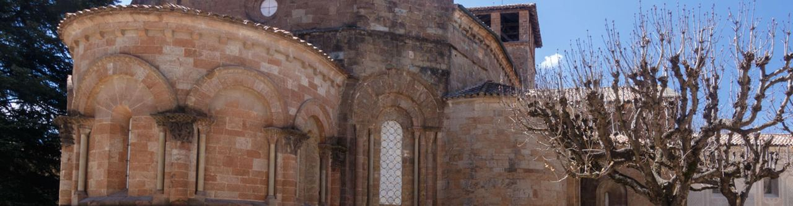

Ruta · Sant Joan
Poques rutes trobarem tan variades com aquesta . Sortirem del monestir de Sant Joan, creuarem boscos de pi roig i roures , i gaudirem de vistes úniques fins a arribar al poble miner d 'Ogassa. Un…